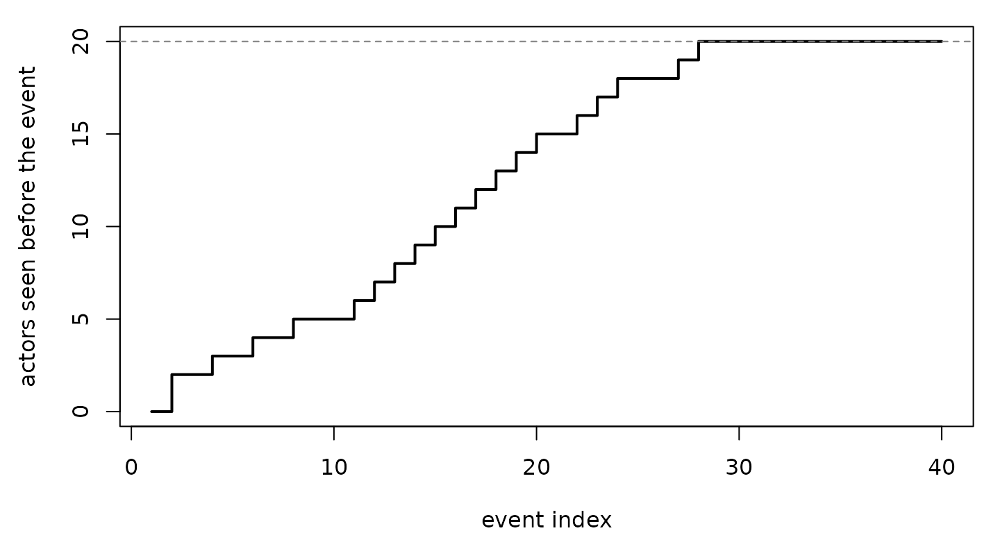

Sampling options
sample_non_events() turns an observed event log into a
nested case-control sample: each event (the case,
event = 1) is paired with n_controls dyads
that could have fired at that moment but did not (the controls,
event = 0), and the pair shares a stratum id.
The options below decide which dyads count as “could have fired”. This
page runs each option on classroom_events or on a small
constructed log and shows what changes in the control set. The code runs
when the page is built.
data(classroom_events)
ev <- classroom_events
c(events = nrow(ev),
senders = length(unique(ev$sender)),
receivers = length(unique(ev$receiver)))
#> events senders receivers
#> 691 18 20
n_controls
The number of controls per case. Every stratum holds one case and up
to n_controls controls; a stratum gets fewer only when the
risk set has fewer valid dyads than that.
sizes <- sapply(c(1, 3, 10), function(k) {
cc <- sample_non_events(ev, n_controls = k, seed = 1)
c(n_controls = k, rows = nrow(cc), controls = sum(cc$event == 0L),
distinct_control_dyads = length(unique(key(ctrl(cc)))))
})
t(sizes)
#> n_controls rows controls distinct_control_dyads
#> [1,] 1 1382 691 321
#> [2,] 3 2764 2073 379
#> [3,] 10 7601 6910 380Controls are drawn with replacement across strata, so the same dyad can serve as a control for many events; with ten controls per case the 6910 controls cover 380 distinct dyads.
mode: one actor pool or two
mode = "one" (the default) draws control senders and
receivers from the same pool of actors, as in networks where everyone
can both send and receive. mode = "two" draws senders from
the actors seen as senders and receivers from the actors seen as
receivers, as in bipartite networks.
receiver_only <- setdiff(unique(ev$receiver), unique(ev$sender))
receiver_only
#> [1] "2" "19"
by_mode <- sapply(c("one", "two"), function(m) {
cc <- ctrl(sample_non_events(ev, n_controls = 3, mode = m, seed = 2))
c(controls = nrow(cc),
control_senders = length(unique(cc$sender)),
controls_sent_by_receiver_only = sum(cc$sender %in% receiver_only))
})
by_mode
#> one two
#> controls 2073 2073
#> control_senders 20 18
#> controls_sent_by_receiver_only 208 0In this log 2 actors (2, 19) only ever receive. Under
mode = "one" they appear as senders in 208 controls; under
mode = "two" in none, because they are not in the sender
pool.
scope: who is in the risk set
"all" and "appearance"
scope = "all" uses every actor seen anywhere in the log.
scope = "appearance" uses only actors that appeared in an
event before the focal event, so an actor who enters late is
not at risk early on.
first_seen <- tapply(c(seq_len(nrow(ev)), seq_len(nrow(ev))),
c(ev$sender, ev$receiver), min)
not_yet_seen <- function(cc) {
d <- ctrl(cc)
sum(first_seen[d$sender] >= d$stratum | first_seen[d$receiver] >= d$stratum)
}
cc_all <- sample_non_events(ev, n_controls = 3, scope = "all", seed = 3)
cc_app <- sample_non_events(ev, n_controls = 3, scope = "appearance", seed = 3)
rbind(all = c(controls = sum(cc_all$event == 0L), not_yet_seen = not_yet_seen(cc_all)),
appearance = c(controls = sum(cc_app$event == 0L), not_yet_seen = not_yet_seen(cc_app)))
#> controls not_yet_seen
#> all 2073 51
#> appearance 2070 0
seen_before <- vapply(1:40, function(i) sum(first_seen < i), numeric(1))
op <- par(mar = c(4, 4.5, 1, 1))
plot(1:40, seen_before, type = "s", lwd = 2, xlab = "event index",
ylab = "actors seen before the event", ylim = c(0, 20))
abline(h = length(first_seen), lty = 2, col = "grey50")
par(op)The step curve counts the actors that have appeared before each of
the first 40 events; the dashed line is the 20 actors of the log. Under
"all", 51 controls involve an actor who has not yet
appeared; under "appearance", 0. All actors have appeared
by event 27, so the two scopes differ only at the start of this log. The
first event has no earlier events and gets no controls under
"appearance" (0 controls in stratum 1).
"citation"
scope = "citation" is built for citation networks, where
a paper (the sender) cites earlier papers (the receivers) at its
publication time. The control sender is a paper that appears as a sender
at the focal time, and the control receiver is a paper that has appeared
as a sender earlier, that is, one already published and citing. The
citing and the cited paper play different roles, so
scope = "citation" always draws them from these two
separate pools, whatever mode is set to.
We construct a citation log: 60 papers published at times 1, …, 60, each paper from the second on citing up to three earlier papers at its own publication time.
set.seed(4)
cit <- do.call(rbind, lapply(2:60, function(i) {
k <- min(3, i - 1)
data.frame(sender = paste0("p", i),
receiver = paste0("p", sample(seq_len(i - 1), k)),
time = i)
}))
head(cit)
#> sender receiver time
#> 1 p2 p1 2
#> 2 p3 p1 3
#> 3 p3 p2 3
#> 4 p4 p3 4
#> 5 p4 p1 4
#> 6 p4 p2 4
pub_time <- setNames(1:60, paste0("p", 1:60))
cites_future <- function(cc) {
d <- ctrl(cc)
sum(pub_time[d$receiver] >= d$time)
}
cc_ca <- sample_non_events(cit, n_controls = 2, scope = "all", mode = "two", seed = 5)
cc_cc <- sample_non_events(cit, n_controls = 2, scope = "citation", seed = 5)
rbind(all = c(controls = sum(cc_ca$event == 0L),
receiver_not_yet_published = cites_future(cc_ca)),
citation = c(controls = sum(cc_cc$event == 0L),
receiver_not_yet_published = cites_future(cc_cc)))
#> controls receiver_not_yet_published
#> all 348 152
#> citation 344 0Under "all", 152 of the controls “cite” a paper that is
published at or after the citing time; under "citation", 0.
Paper p1 cites nothing in this log, so it never appears as
a sender and is not a candidate receiver under "citation"
except as the focal event’s own receiver.
risk = "remove": one-shot dyads
Some processes fire each dyad at most once: a species establishing in
a region, a first citation, a first contact. Under
risk = "remove" a dyad that has fired leaves the risk set,
so it cannot be a control for any later event. We simulate such a
process and round its times to whole units, which creates tied
events.
set.seed(6)
os <- simulate_relational_events(
n_events = 150, senders = paste0("s", 1:10), receivers = paste0("s", 1:10),
risk = "remove")
os$time <- ceiling(os$time * 10) # ties: several events per unit
c(events = nrow(os), distinct_dyads = length(unique(key(os))),
events_in_tied_groups = sum(duplicated(os$time) | duplicated(os$time, fromLast = TRUE)))
#> events distinct_dyads events_in_tied_groups
#> 90 90 81
fired_before <- function(cc) {
first_t <- tapply(os$time, key(os), min)
d <- ctrl(cc)
ft <- first_t[key(d)]
sum(!is.na(ft) & ft < d$time)
}
concurrent <- function(cc) {
d <- ctrl(cc)
sum(paste(key(d), d$time) %in% paste(key(os), os$time))
}
cc_std <- sample_non_events(os, n_controls = 5, risk = "standard", seed = 7)
cc_rm <- sample_non_events(os, n_controls = 5, risk = "remove", seed = 7)
cc_rmc <- sample_non_events(os, n_controls = 5, risk = "remove", seed = 7,
exclude_concurrent = FALSE)
rbind("standard" = c(fired_before = fired_before(cc_std), concurrent = concurrent(cc_std)),
"remove" = c(fired_before = fired_before(cc_rm), concurrent = concurrent(cc_rm)),
"remove, exclude_concurrent = FALSE" = c(fired_before = fired_before(cc_rmc), concurrent = concurrent(cc_rmc)))
#> fired_before concurrent
#> standard 212 23
#> remove 0 0
#> remove, exclude_concurrent = FALSE 0 22The first column counts controls whose dyad had already fired before
the focal time; the second counts controls that coincide with an event
at the same time. Under risk = "standard" 212 controls are
dyads that had already fired. Under risk = "remove" none
are, and by default (exclude_concurrent = TRUE under
"remove") no control is a dyad firing at the focal event’s
own time either. With exclude_concurrent = FALSE, 22
controls are such concurrent events: at a tie they are still at risk at
that instant, as in the Breslow convention. Under
risk = "standard" the default is
exclude_concurrent = FALSE.
exclude_pairs: structural exclusions
Some dyads can never fire, for reasons outside the model: a species’
native range, a forbidden transition, a pair that is not in contact.
They belong outside the risk set. exclude_pairs takes a
two-column table of (sender, receiver) pairs that are never
sampled as controls. As an illustration on
classroom_events, we exclude every dyad from a student to
an instructor:
data(classroom_actors)
instructors <- as.character(classroom_actors$id[classroom_actors$role == "instructor"])
students <- as.character(classroom_actors$id[classroom_actors$role != "instructor"])
forbidden <- expand.grid(sender = students, receiver = instructors,
stringsAsFactors = FALSE)
nrow(forbidden)
#> [1] 36
to_instructor <- function(cc) {
d <- ctrl(cc)
sum(d$sender %in% students & d$receiver %in% instructors)
}
cc_free <- sample_non_events(ev, n_controls = 3, seed = 8)
cc_excl <- sample_non_events(ev, n_controls = 3, seed = 8,
exclude_pairs = forbidden)
c(without_exclusion = to_instructor(cc_free), with_exclusion = to_instructor(cc_excl))
#> without_exclusion with_exclusion
#> 170 0Without the exclusion 170 controls are student-to-instructor dyads; with it, 0. Observed events on excluded dyads stay in the log as cases; the exclusion acts on the controls only.
shift = "exponential": controls at their own times
All the options above give each control its case’s time. A covariate
that depends only on time (weather, time of day) then takes the same
value for the case and its controls and cannot be estimated. With
shift = "exponential" each control is drawn from a
time-shifted copy of the process and stored at its own time:
cc_sh <- sample_non_events(ev, n_controls = 1, seed = 9, shift = "exponential")
case_time <- cc_sh$time[cc_sh$event == 1L][match(ctrl(cc_sh)$stratum,
cc_sh$stratum[cc_sh$event == 1L])]
c(controls = sum(cc_sh$event == 0L),
at_case_time = sum(ctrl(cc_sh)$time == case_time),
strata_without_control = length(attr(cc_sh, "shift")$uninformative))
#> controls at_case_time strata_without_control
#> 691 0 00 of the 691 controls share their case’s time. The species-invasion vignette and the Estimation guide use this design to estimate global covariate effects.
Summary
| Option | Values | What it changes |
|---|---|---|
n_controls |
integer | controls per case |
mode |
"one" (default), "two"
|
one actor pool, or separate sender and receiver pools |
scope |
"all" (default), "appearance",
"citation"
|
every actor, actors seen before the event, or citing papers and earlier papers |
risk |
"standard" (default), "remove"
|
whether a dyad stays at risk after it fires |
exclude_concurrent |
NULL (default), TRUE,
FALSE
|
whether dyads firing at the focal time can be controls;
TRUE under "remove", FALSE under
"standard" by default |
exclude_pairs |
two-column table | dyads that are never controls |
shift |
"none" (default), "exponential"
|
controls at the case time, or at their own back-shifted times |